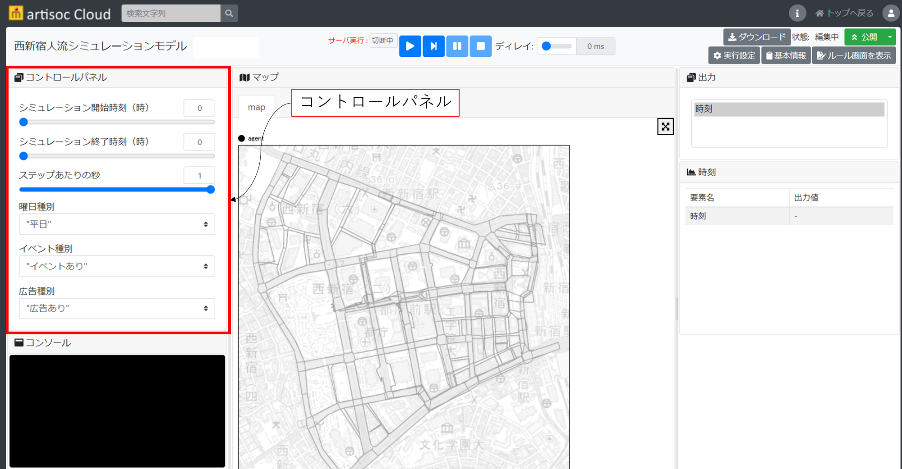

歩行シミュレーション実行準備
ここでは、歩行シミュレーションモデルをartisoc Cloudにインストールした後の実行準備の方法を記載します。
実行準備手順
- artisoc Cloudにモデルをインポート後、画面左上コントロールパネルから、シミュレーションの実行条件を設定します。具体的には、下記の項目を指定します。

シミュレーション開始時刻（整数値）
- 何時からシミュレーションを開始するかを整数値で指定します。
シミュレーション終了時刻（実数値）
- 何時までのシミュレーション実行とするかを実数値で指定します。
- 例えば、「8.1」を指定した場合、8時6分まで、「8.2」を指定した場合、8時12分までの実行となります。
- 何時までのシミュレーション実行とするかを実数値で指定します。
1ステップあたりの秒数
- 1秒間に何回計算するかを設定します。
- 「0.5秒/ステップ」：シミュレーション内のエージェントがシミュレーション内の時間で0.5秒に1回計算、判断を行います。
- 「1秒/ステップ」：シミュレーション内のエージェントがシミュレーション内の時間で1秒に1回計算、判断を行います。
- 1ステップあたりの秒数を細かくするとエージェントの行動を細かく表現できますが、シミュレーション内の計算負荷が高くなるため、シミュレーションの実行時間が長くなります。
- 1秒間に何回計算するかを設定します。
イベント有無
- シミュレーション内でイベントを発生させるかを設定します。
- 「イベントあり」：イベントを想定したシミュレーションが実行されます。
- 「イベントなし」：イベントが実施されていない、平常時のシミュレーションが実行されます。
- シミュレーション内でイベントを発生させるかを設定します。
曜日
- シミュレーションの想定として、平日とするか、土日祝日（休日）とするかを設定します。
- 「平日」：平日を想定したシミュレーションが実行されます。
- 「土日祝日」：土日祝日を想定したシミュレーションが実行されます。
- シミュレーションの想定として、平日とするか、土日祝日（休日）とするかを設定します。
広告有無
- シミュレーション内で広告の効果を反映するかを設定します。
- 「広告あり」：イベントの宣伝広告が設置された場合のシミュレーションが実行されます。
- 「広告なし」：イベントの宣伝広告がない場合のシミュレーションが実行されます。
- シミュレーション内で広告の効果を反映するかを設定します。
インプットデータ
- artisoc Cloudのモデルを読み込むことで、インプットデータとなる歩行ネットワークデータ及びエージェント情報データが自動的に読み込まれます。
- 歩行ネットワークデータやエージェント情報データを更新したい場合は、下記ページのデータ生成手順を参考にしてください。